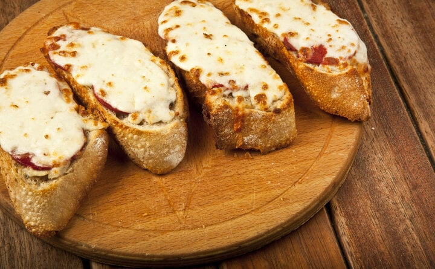

Bolo de laranja
Bolo de laranja sem lactose ou colesterol, perfeito para o lanchinho da tarde
Ver Receita
Bolo de banana
Bolo de banana com farinha de rosca, ótima pedida para o cafezinho da tarde
Ver Receita
Pão de Alho com Crosta de Queijo
Pão de Alho com Crosta de Queijo, perfeito para o seu fim de semana com amigos e familiares.
Ver Receita
Falafel com molho de tahine
Falafel com molho de tahine, uma receita diferente e saborosa.
Ver Receita